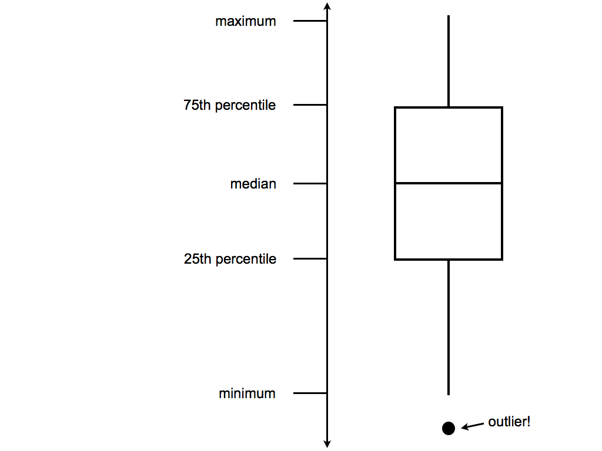

Topic 4 Bivariate Visualizations
Learning Goals
- Identify appropriate types of bivariate visualizations, depending on the type of variables (categorical, quantitative)
- Create basic bivariate visualizations based on real data
You can download a template .Rmd of this activity here. Put the file in the existing Assignment_03 folder within your COMP_STAT_112 folder.
Alterative Text for Visualizations
You should write alt text for every visualization to create.
From the last activity: Alt text should concisely articulate (1) what your visualization is (e.g. a bar chart showing which the harvest rate of cucumbers), (2) a one sentence description of the what you think is the most important takeaway your visualization is showing, and (3) a link to your data source if it’s not already in the caption (check out this great resource on writing alt text for data visualizations).
To add the alt text to your the HTML created from knitting the Rmd, you can include it as an option at the top of your R chunk. For example: {r, fig.alt = “Bar chart showing the daily harvest of cucumbers. The peak cucumber collection day is August 18th”}. In this activity, there will be prompts in the template Rmd but you should try to continue doing this for future assignments.
Bivariate Visualizations
The outcome of the 2016 presidential election surprised many people. In this activity we will analyze data from the 2016 presidential election. To better understand it ourselves, we’ll explore county-level election outcomes and demographics. The data set, prepared by Prof. Alicia Johnson, combines 2008/2012/2016 county-level election returns from Tony McGovern on github, county-level demographics from the df_county_demographics data set within the choroplethr R package, and red/purple/blue state designations from http://www.270towin.com/.
Getting to know the dataset
Example 4.1 Begin by loading the election data from “https://jamesnormington.github.io/112_spring_2023/data/electionDemographics16.csv” and getting to know the data. Write out R functions to get to know the data using the prompts below to guide you.
# Load data from "https://jamesnormington.github.io/112_spring_2023/data/electionDemographics16.csv"
elect <- read_csv("https://jamesnormington.github.io/112_spring_2023/data/electionDemographics16.csv")
# Check out the first rows of elect. What are the units of observation?
# How much data do we have?
# What are the names of the variables?Solution
# Load data from "https://jamesnormington.github.io/112_spring_2023/data/electionDemographics16.csv"
elect <- read_csv("https://jamesnormington.github.io/112_spring_2023/data/electionDemographics16.csv")
## Error in open.connection(structure(4L, class = c("curl", "connection"), conn_id = <pointer: 0x00000000000003df>), : Could not resolve host: jamesnormington.github.io
# Check out the first rows of elect.
# The units of observation are county election results
# The variables are county name, vote counts for parties and total for presidential elections, and more
head(elect)
## Error in h(simpleError(msg, call)): error in evaluating the argument 'x' in selecting a method for function 'head': object 'elect' not found
# There are 3,112 counties and 34 variables
dim(elect)
## Error in eval(expr, envir, enclos): object 'elect' not found
# See the long list below
names(elect)
## Error in eval(expr, envir, enclos): object 'elect' not found
Example 4.2 Explore the win column:
The winrep_2016 variable indicates whether or not the Republican (Trump) won the county in 2016, thus is categorical. Let’s construct both numerical and visual summaries of Trump wins/losses. (Before you do, what do you anticipate?)
# Construct a table (a numerical summary) of the number of counties that Trump won/lost
table(xxx) # fill in the xxx
# Attach a library needed for ggplots
library(xxx)
# Construct a bar chart (a visual summary) of this variable.
ggplot(xxx, aes(xxx)) +
geom_xxx()Solution
# Construct a table (a numerical summary) of the number of counties that Trump won/lost
table(elect$winrep_2016)## Error in table(elect$winrep_2016): object 'elect' not found# Attach a library needed for ggplots
library(ggplot2)# Construct a bar chart (a visual summary) of this variable.
ggplot(elect, aes(x = winrep_2016)) +
geom_bar()## Error in ggplot(elect, aes(x = winrep_2016)): object 'elect' not found
Example 4.3 (Explore Vote Percentages) The perrep_2016 variable includes a bit more detail about Trump’s support in each county.
- Since it’s quantitative we need different tools to visually explore the variability in
perrep_2016. To this end, construct & interpret both a histogram and density plot ofperrep_2016. (Before you do, what do you anticipate?)
# histogram
ggplot(elect, aes(xxx)) +
geom_xxx(color = "white")
# density plot
ggplot(elect, aes(xxx)) +
geom_xxx()Solution
# histogram
ggplot(elect, aes(x = perrep_2016)) +
geom_histogram(color = "white")## Error in ggplot(elect, aes(x = perrep_2016)): object 'elect' not found# density plot
ggplot(elect, aes(x = perrep_2016)) +
geom_density()## Error in ggplot(elect, aes(x = perrep_2016)): object 'elect' not foundThe vast majority of counties in the U.S. had a Republican majority vote (> 50%) within that county.
- Thus far, we have a good sense for how Trump’s support varied from county to county. We don’t yet have a good sense for why. What other variables (ie. county features) might explain some of the variability in Trump’s support from county to county? Which of these variables do you think will be the best predictors of support? The worst?
Solution
Maybe past election history and information about the people that live there and the social culture and values. Let’s see…Background on visualizing relationships
We’ve come up with a list of variables that might explain some of the variability in Trump’s support from county to county. Thus we’re interested in the relationship between:
- response variable: the variable whose variability we would like to explain (Trump’s percent of the vote)
- predictors: variables that might explain some of the variability in the response (percent white, per capita income, state color, etc)
Our goal is to construct visualizations that allow us to examine/identify the following features of the relationships among these variables:
- relationship trends (direction and form)
- relationship strength (degree of variability from the trend)
- outliers in the relationship
Before constructing visualizations of the relationship among any set of these variables, we need to understand what features these should have. As with univariate plots, the appropriate visualization also depends upon whether the variables are quantitative or categorical.
Recall some basic rules in constructing graphics:
- Each quantitative variable requires a new axis. (We’ll discuss later what to do when we run out of axes!)
- Each categorical variable requires a new way to “group” the graphic (eg: using colors, shapes, separate facets, etc to capture the grouping)
- For visualizations in which overlap in glyphs or plots obscures the patterns, try faceting or transparency.
Example 4.4 (Mock-Ups) Consider a subset of the variables:
## Error in filter(., region %in% c(8039, 28003, 40129, 29119, 13247, 27027)): object 'elect' not found## Error in knitr::kable(fd): object 'fd' not foundIn groups, sketch on paper a mock-up of a visualization of the relationship between the given pair of variables (i.e., what type of chart is appropriate to demonstrate the relationship?):
The relationship between
perrep_2016(the response) andperrep_2012(the predictor).The relationship between
perrep_2016(the response) andStateColor(the predictor). Think: how might we modify the below density plot ofperrep_2016to distinguish between counties in red/purple/blue states?
ggplot(elect, aes(x = perrep_2016)) +
geom_density()## Error in ggplot(elect, aes(x = perrep_2016)): object 'elect' not found- The relationship between Trump’s county-levels wins/losses
winrep_2016(the response) andStateColor(the predictor). Think: how might we modify the below bar plot ofwinrep_2016to distinguish between counties in red/purple/blue states?
ggplot(elect, aes(x = winrep_2016)) +
geom_bar()## Error in ggplot(elect, aes(x = winrep_2016)): object 'elect' not foundVisualizing quantitiative vs quantitative relationships
Let’s start by exploring the relationship between Trump’s 2016 support (perrep_2016) and Romney’s 2012 support (perrep_2012), both quantitative variables.
Example 4.5 (Scatterplots and Glyphs) Both perrep_2016 and perrep_2012 are quantitative, thus require their own axes. Traditionally, the response variable (what we are trying to predict or explain) is placed on the y-axis. Once the axes are set up, each case is represented by a “glyph” at the coordinates defined by these axes.
- Make a scatterplot of
perrep_2016vsperrep_2012with different glyphs: points or text.
# just a graphics frame
ggplot(elect, aes(y = perrep_2016, x = perrep_2012))
# add a layer with "point" glyphs
ggplot(elect, aes(y = perrep_2016, x = perrep_2012)) +
geom_point()
# add a layer with symbol glyphs
ggplot(elect, aes(y = perrep_2016, x = perrep_2012)) +
geom_point(shape = 3)
# add a layer with "text" glyphs
ggplot(elect, aes(y = perrep_2016, x = perrep_2012)) +
geom_text(aes(label = abb))Solution
# just a graphics frame
ggplot(elect, aes(y = perrep_2016, x = perrep_2012))## Error in ggplot(elect, aes(y = perrep_2016, x = perrep_2012)): object 'elect' not found# add a layer with "point" glyphs
ggplot(elect, aes(y = perrep_2016, x = perrep_2012)) +
geom_point()## Error in ggplot(elect, aes(y = perrep_2016, x = perrep_2012)): object 'elect' not found# add a layer with symbol glyphs
ggplot(elect, aes(y = perrep_2016, x = perrep_2012)) +
geom_point(shape = 3)## Error in ggplot(elect, aes(y = perrep_2016, x = perrep_2012)): object 'elect' not found# add a layer with "text" glyphs
ggplot(elect, aes(y = perrep_2016, x = perrep_2012)) +
geom_text(aes(label = abb))## Error in ggplot(elect, aes(y = perrep_2016, x = perrep_2012)): object 'elect' not found
- Summarize the relationship between the Republican candidates’ support in 2016 and 2012. Be sure to comment on:
- the strength of the relationship (weak/moderate/strong)
- the direction of the relationship (positive/negative)
- outliers (In what state do counties deviate from the national trend? Explain why this might be the case)
Solution
There is a strong positive relationship between the Republican support from 2012 to 2016, meaning that if a county highly favors a Republican candidate in 2012, they were likely to highly favor a Republican in 2016. Counties in Utah seems to not quite follow this pattern with lower support in 2016 than what you’d expect given the support in 2012. This is because the 2012 candidate was from Utah (data context!).
Example 4.6 (Capture the Trend with 'smooths') The trend of the relationship between perrep_2016 and perrep_2012 is clearly positive and (mostly) linear. We can highlight this trend by adding a model “smooth” to the plot.
- Add a layer with a model smooth:
ggplot(elect, aes(y = perrep_2016, x = perrep_2012)) +
geom_point() +
geom_smooth()Solution
ggplot(elect, aes(y = perrep_2016, x = perrep_2012)) +
geom_point() +
geom_smooth()## Error in ggplot(elect, aes(y = perrep_2016, x = perrep_2012)): object 'elect' not found
- Construct a new plot that contains the model smooth but does not include the individual cases (eg: point glyphs).
Solution
ggplot(elect, aes(y = perrep_2016, x = perrep_2012)) +
geom_smooth()
## Error in ggplot(elect, aes(y = perrep_2016, x = perrep_2012)): object 'elect' not found
- Notice that there are gray bands surrounding the blue model smooth line. What do these gray bars illustrate/capture and why are they widest at the “ends” of the model?
Solution
There are fewer data points at the “ends” so there is more uncertainty about the relationship.- By default,
geom_smoothadds a smooth, localized model line. To examine the “best” linear model, we can specifymethod="lm":
ggplot(elect, aes(y = perrep_2016, x = perrep_2012)) +
geom_point() +
geom_smooth(method = "lm")Solution
ggplot(elect, aes(y = perrep_2016, x = perrep_2012)) +
geom_point() +
geom_smooth(method = "lm")## Error in ggplot(elect, aes(y = perrep_2016, x = perrep_2012)): object 'elect' not foundExample 4.7 (Modify the Scatterplots) As with univariate plots, we can change the aesthetics of scatterplots.
- Add appropriate axis labels to your scatterplot. Label the y-axis “Trump 2016 support (%)” and label the x-axis “Romney 2012 support (%)”.
- Change the color of the points.
- Add some transparency to the points. NOTE:
alphacan be between 0 (complete transparency) and 1 (no transparency).
- Why is transparency useful in this particular graphic?
Solution
ggplot(elect, aes(y = perrep_2016, x = perrep_2012)) +
geom_point(color = "red", alpha = 0.1) +
labs(x = "Romney 2012 support (%)", y = "Trump 2016 support (%)") +
theme_classic()## Error in ggplot(elect, aes(y = perrep_2016, x = perrep_2012)): object 'elect' not found
Exercise 4.1 (More Scatterplots) 2012 results aren’t the only possible predictor of 2016 results. Consider two more possibilities.
- Construct a scatterplot of
perrep_2016andmedian_rent. Summarize the relationship between these two variables.
- Construct a scatterplot of
perrep_2016andpercent_white. Summarize the relationship between these two variables.
- Among
perrep_2012,median_rentandpercent_white, which is the best predictor ofperrep_2016? Why?
Visualizing quantitative vs. categorical relationships
Consider a univariate histogram and density plot of perrep_2016:
## Error in ggplot(elect, aes(x = perrep_2016)): object 'elect' not found## Error in ggplot(elect, aes(x = perrep_2016)): object 'elect' not found## Error in arrangeGrob(...): object 'g1' not foundTo visualize the relationship between Trump’s 2016 support (perrep_2016) and the StateColor (categorical) we need to incorporate a grouping mechanism. Work through the several options below.
Example 4.8 (Side-by-Side Density Plots) We can show density plots for each state color next to each other:
- Construct a density plot for each group.
ggplot(elect, aes(x = perrep_2016, fill = StateColor)) +
geom_density()- Notice that
ggplotrandomly assigns colors to group based on alphabetical order. In this example, the random color doesn’t match the group itself (red/purple/blue)! We can fix this:
ggplot(elect, aes(x = perrep_2016, fill = StateColor)) +
geom_density() +
scale_fill_manual(values = c("blue", "purple", "red"))- The overlap between the groups makes it difficult to explore the features of each. One option is to add transparency to the density plots:
ggplot(elect, aes(x = perrep_2016, fill = StateColor)) +
geom_density(alpha = 0.5) +
scale_fill_manual(values = c("blue", "purple", "red"))- Yet another option is to separate the density plots into separate “facets” defined by group:
ggplot(elect, aes(x = perrep_2016, fill = StateColor)) +
geom_density(alpha = 0.5) +
scale_fill_manual(values = c("blue", "purple", "red")) +
facet_wrap(~ StateColor)Exercise 4.2 (Side-by-Side Histograms) Let’s try a similar strategy using histograms to illustrate the relationship between perrep_2016 and StateColor.
- Start with the default histogram:
ggplot(elect, aes(x = perrep_2016, fill = StateColor)) +
geom_histogram(color = "white")- That’s not very helpful! Separate the histograms into separate facets for each
StateColorgroup.
Example 4.9 (More Options!) Density plots and histograms aren’t the only type of viz we might use…
- Construct side-by-side violins and side-by-side boxplots (see description below).
# violins instead
ggplot(elect, aes(y = perrep_2016, x = StateColor)) +
geom_violin()
# boxes instead
ggplot(elect, aes(y = perrep_2016, x = StateColor)) +
geom_boxplot()Box plots are constructed from five numbers - the minimum, 25th percentile, median, 75th percentile, and maximum value of a quantitative variable:

- In the future, we’ll typically use density plots instead of histograms, violins, and boxes. Explain at least one pro and one con of the density plot.
Exercise 4.3 Let’s not forget the most important purpose of these visualizations! Summarize the relationship between Trump’s 2016 county-level support among red/purple/blue states.
Visualizing categorical vs categorical relationships
Finally, suppose that instead of Trump’s percentage support, we simply want to explore his county-level wins/losses:
## Error in ggplot(elect, aes(x = winrep_2016)): object 'elect' not foundSpecifically, let’s explore the relationship between winrep_2016 and StateColor, another categorical variable.
Exercise 4.4 (Side-by-side bar plots) We saw above that we can incorporate a new categorical variable into a visualization by using grouping features such as color or facets. Let’s add information about StateColor to our bar plot of winrep_2016.
Construct the following 4 bar plot visualizations.
# a stacked bar plot ggplot(elect, aes(x = StateColor, fill = winrep_2016)) + geom_bar() # a side-by-side bar plot ggplot(elect, aes(x = StateColor, fill = winrep_2016)) + geom_bar(position = "dodge") # a proportional bar plot ggplot(elect, aes(x = StateColor, fill = winrep_2016)) + geom_bar(position = "fill") # faceted bar plot ggplot(elect, aes(x = StateColor, fill = winrep_2016)) + geom_bar() + facet_wrap(~winrep_2016)Name one pro and one con of using the “proportional bar plot” instead of one of the other three options.
What’s your favorite bar plot from part (a)? Why?
Assignment 3: due Wednesday, Feb. 8th @ 11:59pm
Hot Dogs
In the annual Nathan’s hot dog eating contest, people compete to eat as many hot dogs as possible in ten minutes. Data on past competitions were compiled by Nathan Yau for “Visualize This: The FlowingData Guide to Design, Visualization, and Statistics”:
hotdogs <- read_csv("http://datasets.flowingdata.com/hot-dog-contest-winners.csv")## Error in open.connection(structure(5L, class = c("curl", "connection"), conn_id = <pointer: 0x0000000000000406>), : Could not resolve host: datasets.flowingdata.comExercise 4.5 Address the following:
- Construct a visualization of the winning number of hot dogs by year. THINK: Which is the response variable?
- Temporal trends are often visualized using a line plot. Add a
geom_line()layer to your plot from part (a).
- Summarize your observations about the temporal trends in the hot dog contest.
Exercise 4.6 All but two of the past winners are from the U.S. or Japan:
table(hotdogs$Country)## Error in table(hotdogs$Country): object 'hotdogs' not foundUse the following code to filter out just the winners from U.S. and Japan and name this hotdogsSub. (Don’t worry about the code itself - we’ll discuss similar syntax later in the semester!)
library(dplyr)
hotdogsSub <- hotdogs %>%
filter(Country %in% c("Japan", "United States"))## Error in filter(., Country %in% c("Japan", "United States")): object 'hotdogs' not found- Using a density plot approach without facets, construct a visualization of how the number of hot dogs eaten varies by country.
- Repeat part a using a density plot approach with facets.
- Repeat part a using something other than a density plot approach. (There are a few options!)
- Summarize your observations about the number of hot dogs eaten by country.
The Bechdel Test
Recall the “Bechdel test” data from the previous activity. As a reminder, the “Bechdel test” tests whether movies meet the following criteria:
- there are \(\ge\) 2 female characters
- the female characters talk to each other
- at least 1 time, they talk about something other than a male character
In the fivethirtyeight.com article “The Dollar-And-Cents Case Against Hollywood’s Exclusion of Women”, the authors analyze which Hollywood movies do/don’t pass the test. Their data are available in the fivethirtyeight package:
library(fivethirtyeight)
data(bechdel)In investigating budgets and profits, the authors “focus on films released from 1990 to 2013, since the data has significantly more depth since then.” Use the following code to filter out just the movies in these years and name the resulting data set Beyond1990 (don’t worry about the syntax):
library(dplyr)
Beyond1990 <- bechdel %>%
filter(year >= 1990)Exercise 4.7 Address the following:
- Construct a visualization that addresses the following research question: Do bigger budgets (
budget_2013) pay off with greater box office returns (domgross_2013)? In constructing this visualization, add a smooth to highlight trends and pay attention to which of these variables is the response.
- Using your visualization as supporting evidence, answer the research question.
- Part of the fivethirtyeight article focuses on how budgets (
budget_2013) differ among movies with different degrees of female character development (clean_test). Construct a visualization that highlights the relationship between these two variables. There are many options - some are better than others!
- Using your visualization as supporting evidence, address fivethirtyeight’s concerns.
Exercise 4.8 NOTE: The following exercise is inspired by a similar exercise proposed by Albert Kim, one of the fivethirtyeight package authors.
Return to the fivethirtyeight.com article and examine the plot titled “The Bechdel Test Over Time”.
- Summarize the trends captured by this plot. (How has the representation of women in movies evolved over time?)
- Recreate this plot from the article!
To do so, you’ll need to create a new data set named newbechdel in which the order of the Bechdel categories (clean_test) and the year categories (yearCat) match those used by fivethirtyeight. Don’t worry about the syntax:
library(dplyr)
newbechdel <- bechdel %>%
mutate(clean_test = factor(bechdel$clean_test, c("nowomen", "notalk", "men", "dubious", "ok"))) %>%
mutate(yearCat = cut(year, breaks = seq(1969, 2014, by = 5)))Further, you’ll need to add the following layer in order to get a color scheme that’s close to that in the article:
scale_fill_manual(values = c("red", "salmon", "pink", "steelblue1", "steelblue4"))NOTE: that your plot won’t look exactly like the authors’, but should be close to this:

Appendix: R Functions
Data Wrangling R functions
| Function/Operator | Action | Example |
|---|---|---|
filter(data,condition) |
Provide rows of a data set that satisfy a condition | bechdel %>% filter(year >= 1990) |
mutate(data,varname =) |
Create a new variable | bechdel %>% mutate(yearCat = cut(year, breaks = seq(1969, 2014, by = 5))) |
cut(x,breaks) |
Cut a quantitative variable into categories by the break points | bechdel %>% mutate(yearCat = cut(year, breaks = seq(1969, 2014, by = 5))) |
ggplot2 foundation functions
| Function/Operator | Action | Example |
|---|---|---|
ggplot(data) |
Create a blank canvas that can create a visualization based on data | ggplot(data = elect) |
+ geom_bar(aes(x)) |
Add a bar plot | geom_bar(aes(x = winrep_2016)) |
+ geom_bar(aes(x,fill),position='fill') |
Add a propotional bar plot | geom_bar(aes(x = winrep_2016,fill = StateColor),position='fill') |
+ geom_bar(aes(x,fill),position='dodge') |
Add a side-by-side bar plot | geom_bar(aes(x = winrep_2016,fill = StateColor),position='dodge') |
+ geom_smooth(aes(x,y)) |
Add a smoothed average curve of scatterplot | geom_smooth() |
+ geom_smooth(aes(x,y),method='lm') |
Add a best fit line to a scatterplot | geom_smooth(method='lm') |
+ geom_point(aes(x,y)) |
Add a scatterplot | geom_bar(aes(x = year,y=budget_2013)) |
+ geom_text(aes(x,y,label)) |
Add a text to a plot | geom_text(aes(label=abb)) |
+ facet_wrap(~x) |
Facet a plot (break into subplots based on groups) | facet_wrap(~StateColor) |